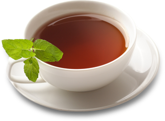

 Кафе Шоколадница
- тел: +79234561723
- email: Shokoladnik@gmail.com
- адрес: г.Москва ул. Вавилова 2

О компании
На сегодняшний день сеть кофеен «Шоколадница» – одна из крупнейших и самых динамично развивающихся компаний в сфере ресторанного бизнеса в Москве, регионах России и странах СНГ. История кофеен «Шоколадница» восходит корнями к легендарному кафе «Шоколадница» у метро Октябрьская – единственном столичном месте, где на протяжении нескольких десятилетий гостям предлагали изысканные лакомства и напитки: горячий шоколад и легендарные блинчики с начинкой из шоколада, изюма и орехов. С момента открытия кафе в 1964 году по сегодняшний день, когда кафе выросло в сеть уютных кофеен, «Шоколадница» была и остается законодателем «кофейной моды» в Москве. Новую жизнь кофейня получила в 2000 году. Возрожденная «Шоколадница» начала работать по европейским стандартам, которые предполагают значительное расширение и постоянное обновление ассортимента, поддержание высокого уровня сервиса и качества кухни.Развитие сети кофеен «Шоколадница»
В настоящее время в Москве и в Московской области уже работают около 240 кофеен, которые расположены как в историческом центре Москвы, так и спальных районах, а также в оживленных торговых и бизнес-центрах, аэропортах. В 2006 году началось активное развитие сети в регионах. Сегодня «Шоколадница» успешно работает во многих городах России: Санкт-Петербурге, Екатеринбурге, Казани, Нижнем Новгороде, Новосибирске, Ростове-на-Дону, Уфе, Сочи, Краснодаре, Курске, Оренбурге, Пензе, Иркутске, Перми, Иваново, Подольске, Саратове, Туле, Череповце, Тюмени, Воронеже, Чите, Твери и других городах.Кофейни
Отличительная особенность каждой из наших кофеен – изысканный и уютный дизайн интерьера, теплая и неповторимая атмосфера. В доступном для Гостей обзоре всегда расположена специальная витрина, где можно сразу выбрать понравившийся десерт и лично пообщаться с бариста – специалистом по приготовлению кофе. В теплый сезон открываются уютные летние веранды.Фабрика-кухня
Ассортимент «Шоколадницы» весьма разнообразен и способен удовлетворить любой, даже самый изысканный вкус! Наряду с прекрасным кофе, сваренным из свежеобжаренных зерен, элитными сортами чая, соками и коктейлями наша сеть славится своими тортами и изысканными десертами. Все блюда эксклюзивны и готовятся по разработанным нашими кондитерами технологиям с использованием только натуральных продуктов.Наши награды
Мы ежегодно получаем признание наших Гостей и экспертов ресторанного бизнеса: пять лет подряд с 2004 года «Шоколадница» побеждала в номинации «Лучшая кофейня» премии «Лучший ресторан Москвы» портала menu.ru, в 2011 портал признал «Шоколадницу» лучшим сетевым рестораном, в 2010 году компания стала любимым брендом Россиян в ежегодном рейтинге, «Самой динамичной развивающейся сетью» мы стали по версии magazan.ru в 2011 году, в 2012 yell.ru наградил «Шоколадницу» премией «Лучший бизнес-завтрак». И это лишь часть наших наград!
О
Ш
О
К
О
А
Д
Н
И
Ц
Е